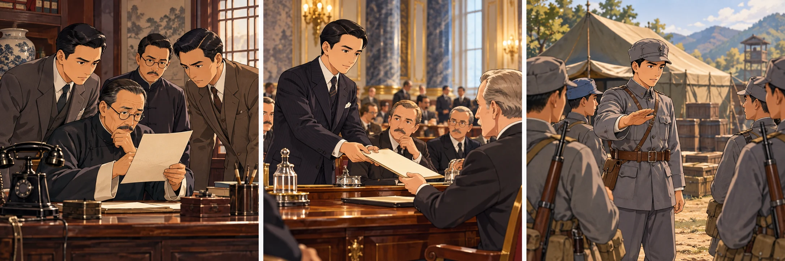
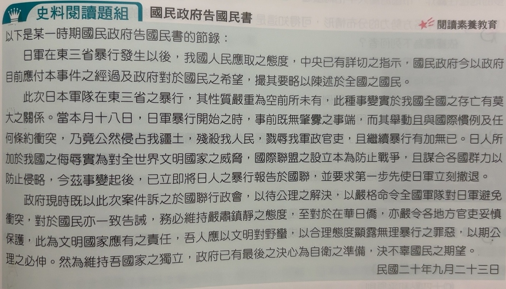
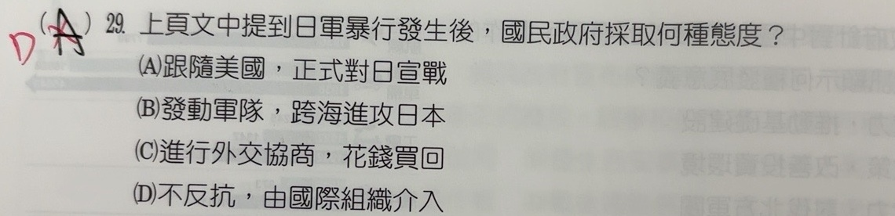
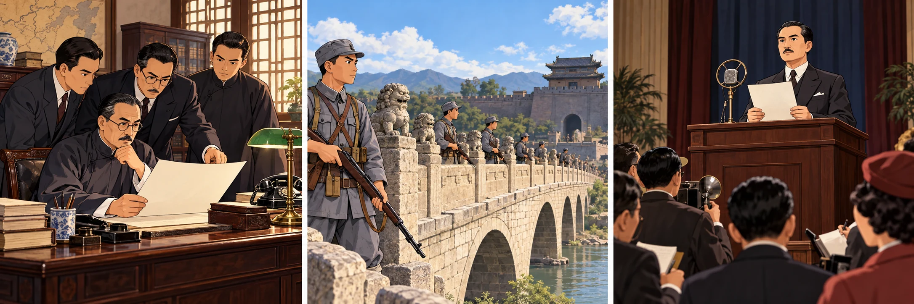
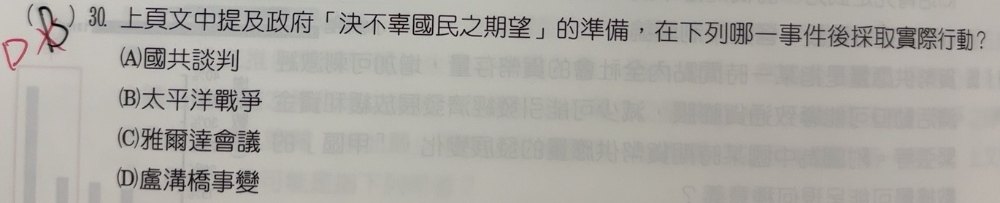

完整原題
作答所需文章／材料
【國民政府告國民書】 以下是某一時期國民政府告國民書的節錄： 日軍在東三省暴行發生以後，我國人民應取之態度，中央已有詳切之指示，國民政府今以政府目前應付本事件之經過及政府對於國民之希望，撮其要略以陳述於全國之國民。 此次日本軍隊在東三省之暴行，其性質嚴重為空前所未有，此種事變實於我國全國之存亡有莫大之關係。當本月十八日，日軍暴行開始之時，事前既無肇釁之事端，而其舉動且與國際慣例及任何條約衝突，乃竟公然侵占我疆土，殘殺我人民，戮辱我軍政官吏，且繼續暴行有加無已。日人所加於我國之侮辱實為對全世界文明國家之威脅，國際聯盟之設立本為防止戰爭，且謀合各國群力以防止侵略，今茲事變起後，已立即將日人之暴行報告於國聯，並要求第一步先使日軍立刻撤退。 政府現時既以此次案件訴之於國聯行政會，以待公理之解決，以嚴格命令全國軍隊對日軍避免衝突，對於國民亦一致告誡，務必維持嚴肅鎮靜之態度，至對於在華日僑，亦嚴令各地方官吏妥慎保護，此為文明國家應有之責任，吾人應以文明對野蠻，以合理態度顯露無理暴行之罪惡，以期公理之必伸。然為維持吾國家之獨立，政府已有最後之決心為自衛之準備，決不辜國民之期望。 民國二十年九月二十三日歷史第29題｜九一八事變後的國聯申訴與避免衝突
歷史第30題｜全面抗戰與正式對日宣戰的時間差
先想一想，再查看答案、解說與原圖
歷史第29題｜九一八事變後的國聯申訴與避免衝突
新增分享原卷｜第29題 · 首次出題日期 2026-10-29 · 原AI對話 ↗
逐項解析
| 選項與原句 | 判讀 | 句意與判斷理由 |
|---|---|---|
| (A) 跟隨美國，正式對日宣戰 | 不選 | 1931年的公告不是1941年的正式宣戰；當下重點是向國聯申訴。 |
| (B) 發動軍隊，跨海進攻日本 | 不選 | 原文明令避免衝突，沒有跨海進攻日本的行動。 |
| (C) 進行外交協商，花錢買回 | 不選 | 文中沒有付錢買回領土的內容。 |
| (D) 不反抗，由國際組織介入 | 應選 | 對應原文命令軍隊避免衝突，並把案件訴諸國聯；應限定為本份公告的當下政策。 |
詳細說明與解題步驟
【直接找公告中的兩個動作】
一是「以此次案件訴之於國聯行政會」，表示訴諸國際聯盟，希望藉國際組織介入解決；二是「以嚴格命令全國軍隊對日軍避免衝突」，表示公告當下要求避免軍事衝突。兩者合起來最符合D。
【用日期排除正式宣戰】
末署民國二十年九月二十三日，即1931年9月23日；文中本月十八日及東三省指九一八事變。中華民國正式對日宣戰在1941年，不能把十年後的事件放到這份公告當下，因此不選A。
【不要把選項簡化成所有人都未抵抗】
D的「不反抗」是本題對公告避免衝突政策的簡稱，不等於當時中國所有軍民、所有地區都沒有抵抗。文章本身也提到日後自衛準備；此題只問暴行發生後這份公告採取的態度。B的跨海進攻與原文相反，C的花錢買回沒有文章依據。

① 先定位公告當下
末署民國二十年，也就是1931年。東三省與本月十八日，指九一八事變；不能直接跳到1941年的正式對日宣戰。
② 訴之於國聯行政會
這句表示把案件交給國際聯盟，希望由國際組織介入。國聯是當時的組織，不能混成後來的聯合國。
③ 命令軍隊避免衝突
公告明說要求軍隊對日軍避免衝突。D的「不反抗」在此概括公告政策，不代表當時所有中國軍民都沒有抵抗。
④ 1931年的公告：避免衝突、訴諸國聯
答案 D：不反抗，由國際組織介入
- 訴諸國聯：請國際組織介入。
- 避免衝突：對應公告當時的軍事命令。
- A正式宣戰在1941年；B跨海進攻、C花錢買回都無原文依據。
核對註記：已對照兩張原卷，完整轉錄共同閱讀文章、日期及本題四選項；教材對應課次無證據，歸綜合。
原圖（僅本題）


歷史第30題｜全面抗戰與正式對日宣戰的時間差
新增分享原卷｜第30題 · 首次出題日期 2026-10-29 · 原AI對話 ↗
逐項解析
| 選項與原句 | 判讀 | 句意與判斷理由 |
|---|---|---|
| (A) 國共談判 | 不選 | 不是本題所問全面抗戰開始的直接事件。 |
| (B) 太平洋戰爭 | 不選 | 發生於1941年，當時中國已經抗戰多年；不能把正式宣戰等同開始抗戰。 |
| (C) 雅爾達會議 | 不選 | 會議在1945年，已接近第二次世界大戰結束，時間過晚。 |
| (D) 盧溝橋事變 | 應選 | 1937年七七事變後，中日衝突擴大為全面抗戰，符合自衛準備付諸行動的教材脈絡。 |
詳細說明與解題步驟
【先看原文的自衛準備】
公告在1931年九一八事變後，先訴諸國聯、要求避免衝突，又表示為維持國家獨立而有自衛準備。題目問後來哪件事後付諸實際行動，依教材全面抗戰的脈絡，應對應1937年盧溝橋事變，亦稱七七事變，因此選D。
【三個時間點不能混成一件事】
1931年：九一八事變，本文公告訴諸國聯並要求避免衝突。
1937年：盧溝橋事變後，戰事擴大，進入全面抗戰。
1941年：太平洋戰爭爆發後，中華民國於12月9日正式對日宣戰。
【抗戰與宣戰不同】
實際交戰可以早於外交上正式宣戰；不能因1941年才宣戰，就說1937年沒有抗戰，也不能因此改選B。A的國共談判不是此題所問直接事件，C雅爾達會議則在1945年，時間過晚。

① 1931年：公告準備自衛
九一八事變後，公告一方面訴諸國聯，另一方面說「為自衛之準備」。本題再問：後來哪個事件後，這準備付諸行動？
② 1937年：盧溝橋事變
七七事變後，中日戰事擴大，進入全面抗戰。這是本題對應的實際自衛行動，所以選盧溝橋事變。
③ 1941年：正式對日宣戰
太平洋戰爭爆發後，中華民國在1941年12月9日正式對日宣戰。但這時已抗戰多年，不是直到此刻才開始抵抗。
④ 1937全面抗戰，早於1941正式宣戰
答案 D：盧溝橋事變
- 1931：公告訴諸國聯並準備自衛。
- 1937：事變後進入全面抗戰，是本題所問。
- 1941：正式宣戰較晚，不能因此改選太平洋戰爭。
核對註記：已對照兩張原卷，完整轉錄共同閱讀文章、日期及本題四選項；教材對應課次無證據，歸綜合。
原圖（僅本題）
